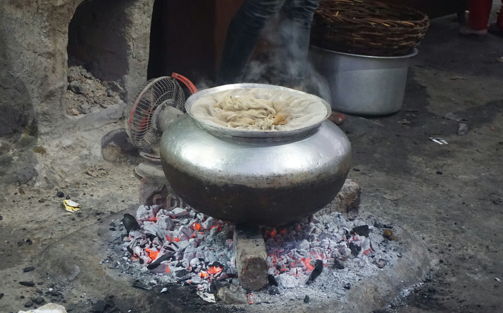

El arte del fuego lento
Vivimos en una época de inmediatez, donde la comida rápida y el microondas han desplazado a los guisos de tres horas. Sin embargo, recuperar el "chup-chup" no es solo una cuestión de sabor, sino de salud mental y nutricional.
La paciencia como ingrediente principal
El secreto de la cocina tradicional no reside en especias exóticas ni en herramientas carísimas, sino en el control del tiempo. Cuando cocinamos a baja temperatura, permitimos que las fibras de la carne se relajen y que el colágeno se convierta en gelatina, otorgando esa textura melosa que se deshace en la boca.
Además, las verduras caramelizan sus propios azúcares lentamente, aportando una profundidad de sabor (la reacción de Maillard) que es imposible conseguir con un salteado rápido a fuego fuerte. Es un proceso químico que requiere calma.

Herramientas esenciales
Para iniciarse en este mundo, no hace falta equipar la cocina desde cero. Sin embargo, hay ciertos elementos que marcan la diferencia entre un buen plato y uno excelente. Aquí tienes nuestra lista de imprescindibles:
- Cazuela de barro o hierro fundido: Retienen el calor de manera excepcional y lo distribuyen suavemente.
- Cuchara de madera: Vital para no alterar el sabor metálico ni dañar el fondo de los recipientes.
- Difusor de calor: Si cocinas con gas, es una herramienta económica y vital para evitar puntos calientes que quemen el guiso.
- Caldo casero: La base líquida es el alma del guiso. Evita los cubitos industriales siempre que puedas.
"La cocina es un lenguaje mediante el cual se puede expresar armonía, felicidad, belleza, poesía, complejidad, magia, humor, provocación, cultura."
El respeto por el producto
De nada sirve tener la mejor técnica si el producto no acompaña. En nuestras jornadas haremos hincapié en el uso de productos de kilómetro cero. Apoyar a los agricultores locales no solo mejora la economía de la región, sino que garantiza que los ingredientes llegan a la olla en su punto óptimo de maduración.

Únete a nosotros
Si este artículo te ha abierto el apetito, no dudes en inscribirte en los talleres prácticos que realizaremos este fin de semana. Aprenderás a dominar los tiempos, a escoger las mejores legumbres y a perderle el miedo a la olla express.
Etiquetas: #CocinaTradicional, #Recetas